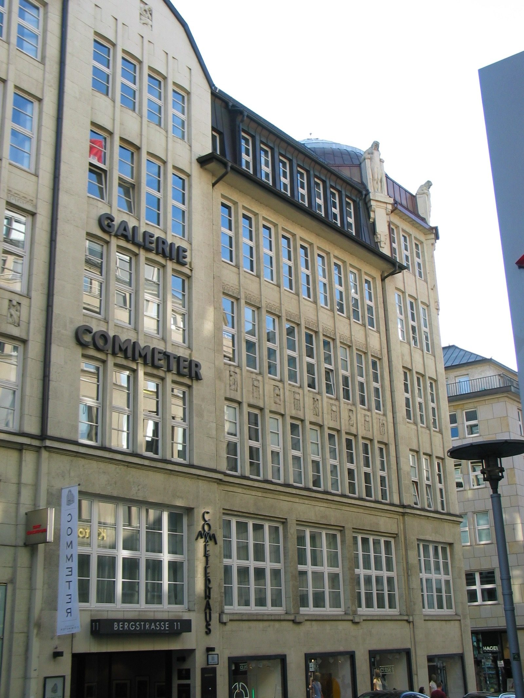

Kapitel 10 – Land og by
I Hamborg slår Nolde sig ned nogle uger blandt sømænd og ludere for at 'male sig ind' i Hamburger Kunsthalle, og i Berlin dyrker han i vintermånederne sammen med Ada storbyens dekadence på forskellige forlystelsesetablissementer ved at fastholde den på sin skitseblok.
Som helbredende modvægt til storbyens nedbrydende overfladiskhed og kaos oplever de begge den efterfølgende periode med livgivende ro i fiskerhuset på Als.